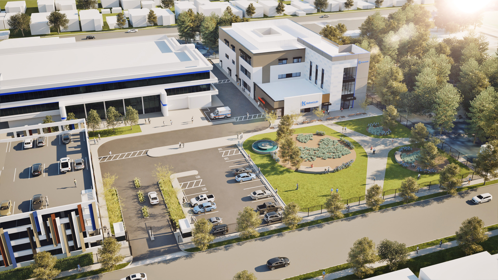

Project File / Confidential Work Sample
HC-01
ACUTE CARE / BEHAVIORAL HEALTH FACILITY
A competition-phase behavioral health project developed through design development, requiring a close alignment between programming, circulation, and therapeutic space. I helped shape the project through programming strategy, floor plan development, secure staff and patient circulation studies, and coordination of courtyards, interiors, site planning, and overall massing under OSHPD/HCAI criteria.